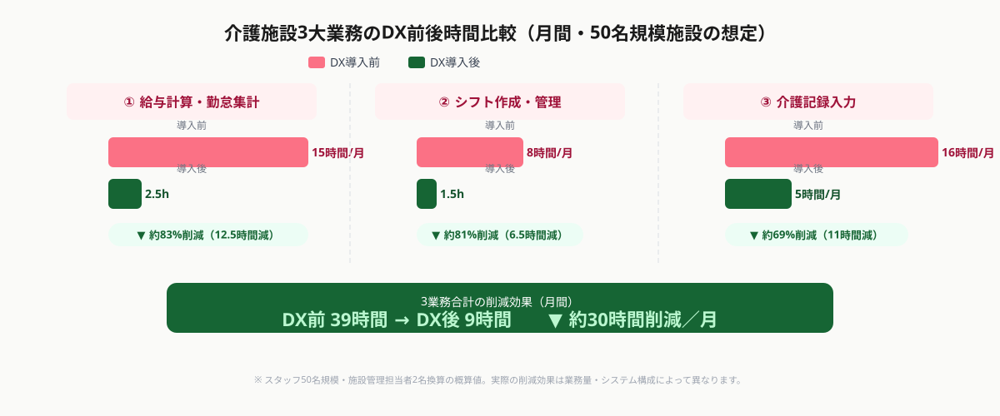
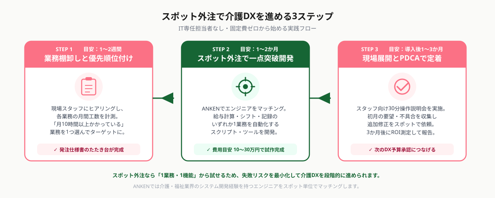

介護業界の業務課題とDXが遅れる3つの理由
介護・福祉業界は慢性的な人手不足と高い離職率が続く一方で、紙ベースの業務フローが根強く残っています。厚生労働省の調査（2025年）によると、介護施設スタッフの業務時間のうち約30〜40%が記録・書類・シフト調整などの間接業務に費やされており、直接介護にあてるべき時間を圧迫しています。
それでもDXが進まない主な理由は3つあります。
① IT専任担当者がいない
多くの中小規模の介護施設・社会福祉法人では、IT・情報システム担当者を専任で置く余裕がありません。外部ベンダーへの相談コストや導入後の保守体制への不安から、「現状維持」を選ぶ判断が多くなります。
② 「一括導入」前提のシステム提案が合わない
大手業務システムベンダーは施設全体の業務を一括で切り替えるパッケージ型提案が中心で、初期費用が数百万円に上るケースもあります。「給与計算だけ自動化したい」「シフト調整の手間だけ減らしたい」という単機能のニーズには応えにくい構造です。
③ 現場スタッフのIT習熟度のばらつきへの不安
現場スタッフの年齢層が幅広く、「新しいシステムを導入しても使いこなせないのでは」という懸念が導入の足かせになっています。実際には現場に合わせた画面設計・研修セットで十分に対応できますが、その設計を外部に依頼する手段が知られていないケースが多いです。
これらの課題を解決するのが「スポット外注」という手法です。特定の業務・機能に絞ってエンジニアをタスク単位で依頼できるため、初期費用を最小化しながら業務DXを一歩ずつ進めることができます。
AI化で効率化できる介護施設の三大業務

介護施設でスポット外注によるDXの効果が出やすい業務は次の3つです。
① 給与計算・勤怠集計の自動化
介護施設では夜勤・早番・遅番など複雑なシフトがあり、深夜割増・各種手当の計算ミスが起きやすい業務です。現状ExcelやタイムカードのデータをCSVに変換して手作業で集計しているケースが多く、月末の担当者の負荷が極めて高くなります。
スポット外注で「勤怠データを自動集計して給与明細のドラフトを生成するRPAスクリプト」や「既存の介護専門ソフトと給与ソフトのAPI連携」を構築することで、月末作業を従来の10〜15時間から2〜3時間に圧縮した施設が複数あります。
② シフト管理・シフト作成支援のAI化
スタッフの希望休・有資格者の配置ルール・人員基準（夜勤2名以上など）を同時に満たすシフトを手動で組むのは、小規模施設でも月間4〜8時間かかる作業です。
シフト自動作成ツール（例：HRBrain、ShiftMAX、CARE LAB）との連携スクリプトや、独自のExcelシートにAI提案機能を追加するPythonスクリプトをスポット外注で開発することで、シフト担当者の作業を大幅に削減できます。
③ 介護記録（ケア記録）のAI補助入力
1日の業務終了後にケア記録を手書き・PC入力する作業は、スタッフ1人あたり1日30〜60分を消費します。音声入力＋AI文章整形ツールを導入することで、口頭でメモした内容が自動的に標準書式の記録文章に変換されます。
主要な介護ソフト（ワイズマン、カイポケ、ほのぼのNEXT等）のAPIや帳票出力機能に合わせたカスタマイズをスポット外注で依頼することで、既存ソフトを変えずに音声AI記録を導入できます。
スポット外注が向いているケース：既存の介護ソフトと自社の給与ソフトをAPI連携させたい / 自社固有のシフトルールに合わせた自動化スクリプトを作りたい / 介護記録のAI補助を自社の記録書式に合わせてカスタマイズしたい
SaaSだけで完結できるケース：シフト管理ツールを新規導入してゼロから使い始める / 給与ソフトを新しいクラウド型に移行する（ API連携やカスタマイズなしで標準機能を使う場合）
スポット外注で介護DXを実現する3ステップ

STEP 1：自動化対象業務の棚卸しと優先順位付け（1〜2週間）
まず「現在何の業務にどれくらいの時間がかかっているか」を担当スタッフにヒアリングし、業務ごとの月間作業時間と「自動化できそうか」の感覚値を整理します。
優先度の判断基準は3点です。①月間10時間以上かかっている（工数削減の絶対量が大きい）、②ルールが明文化できる（判断基準が属人化していない）、③ミスが発生すると法令違反・スタッフへの信頼低下につながる（リスクが高い）。給与計算は③の観点で最優先されるケースが多いです。
STEP 2：スポット外注でターゲット業務を一点突破（1〜2か月）
優先度の高い業務1つをターゲットに絞り、スポット外注でエンジニアに依頼します。発注の際は「現在の業務フロー（入力→処理→出力の流れ）」「使用中のソフト名・バージョン」「出力したい形式（Excelテンプレート、PDF等）」を具体的に伝えることが成功の鍵です。
費用の目安はシステム連携・スクリプト開発で10〜30万円程度。大手ベンダーへの一括導入（100〜500万円）と比べて圧倒的に低コストで、PoCとして1機能から始めて効果を確認してから次のステップに進める点がスポット外注の強みです。
STEP 3：現場展開とPDCAで定着させる（導入後1〜3か月）
システム完成後の「現場定着」が介護DXで最も重要なフェーズです。スタッフへの操作説明会（30分〜1時間）と、初月の「使ってみての不具合・要望」収集期間を設けます。スポット外注なら、改修・追加機能も随時単発で依頼できるため、本格的なシステム変更なしに段階的に機能を磨いていけます。
3か月後に業務時間・ミス発生件数・スタッフ満足度を簡単に記録し、ROI（投資対効果）を施設長・法人本部に報告できる形にまとめると、次のDX予算承認につながります。
ANKENでは、給与計算自動化・シフト管理システム連携・介護記録AI補助などの開発実績を持つエンジニアをスポット単位でご紹介しています。「何から始めればよいかわからない」という段階からご相談いただけます。初回相談は無料です。
👉 無料で相談する（介護DXをスポット外注で依頼する）どの業務から着手すべきか・どのくらい費用がかかるか、現状をヒアリングした上でご提案します。
スポット外注に向いている介護DX案件の例
実際にANKENで受け付けている介護・福祉向けスポット外注の典型的な依頼内容をご紹介します。
案件例①：勤怠CSVから給与計算ドラフト生成スクリプト
タイムカードシステムからエクスポートされるCSVを読み込み、深夜割増・早出手当・夜勤手当・有給計算を自動処理して給与ソフト（MFクラウド給与、弥生給与等）にインポート可能なCSVを出力するPythonスクリプトの開発。工数目安：5〜10日、費用目安：15〜25万円。
案件例②：介護ソフトと外部サービスのAPI連携
ワイズマン・カイポケ等の介護専門ソフトが持つエクスポート機能を活用し、Googleスプレッドシートや社内共有フォルダへの自動転送・加工スクリプトの開発。ソフトによって対応可能な範囲が異なるため、初回相談でシステム構成を確認した上で見積もりを提示します。
案件例③：音声入力×AIによる介護記録補助ツール
スタッフがスマートフォンで音声メモを録音すると、Whisper（音声認識）→ChatGPT APIで施設規定の記録書式に変換してWebフォームに自動入力する小規模Webアプリの開発。工数目安：10〜15日、費用目安：25〜40万円。
案件例④：シフト作成支援Excelマクロ・スクリプト
既存のExcelシフト表に、スタッフの希望休・資格要件・人員基準を入力すると「配置ルール違反がないシフト候補」をAIが自動提案するマクロ（VBA）またはPythonスクリプトの開発。工数目安：5〜8日、費用目安：10〜20万円。
よくある質問
- Q. 既存の介護専門ソフトを変えずにAI機能を追加できますか？
- A. 多くのケースで可能です。介護ソフトのエクスポート機能やAPIを活用してデータを取り出し、AI処理後に再インポートまたは別システムで表示する方法でカスタマイズできます。
- Q. 介護記録などの個人情報・医療情報をAIに送っても安全ですか？
- A. OpenAI等のAPIはオプトアウト設定でデータ学習を無効にできます。スポット外注で開発する際は、個人情報を含むデータをマスキング処理してからAIに送るフローを標準設計として組み込むことを推奨します。
- Q. スポット外注の費用が払えるか不安です。補助金は使えますか？
- A. IT導入補助金（経済産業省）はシステム開発費用の補助対象となる場合があります。また介護分野では厚生労働省の「介護テクノロジー導入支援事業」等の補助制度も存在します。申請サポートも含めてご相談ください。
まとめ
社会福祉法人・介護施設の業務DXは「一括大規模投資が必要」という思い込みを捨て、スポット外注で一点突破から始めることが最も現実的かつ低リスクな選択肢です。
実践のポイントを3つまとめます。①月間10時間以上かかっている業務を1つ選んで最初のターゲットにする、②スポット外注で10〜30万円の予算から試作・検証する、③3か月後に時間削減効果を測定して次のDX投資への根拠にする。介護スタッフが事務作業から解放されるほど、直接介護の質と職員満足度が上がります。人手不足対策の最初の一手として、ぜひ業務DXの小さな一歩を踏み出してみてください。